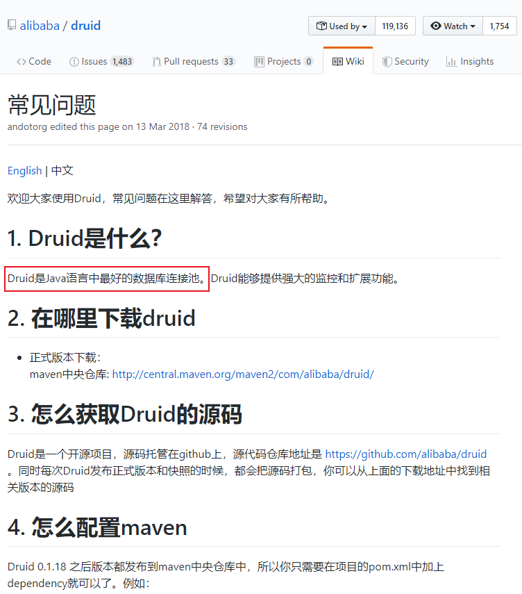
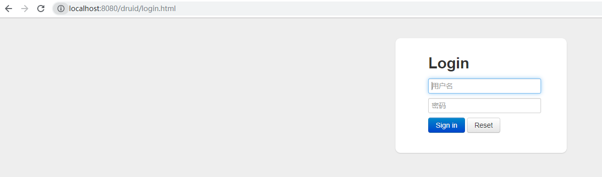
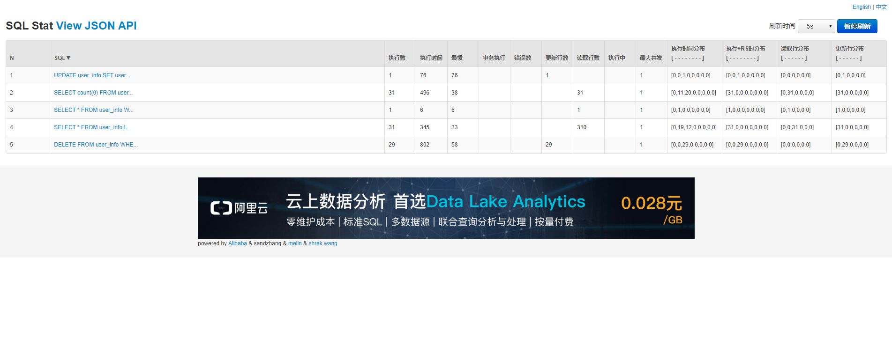
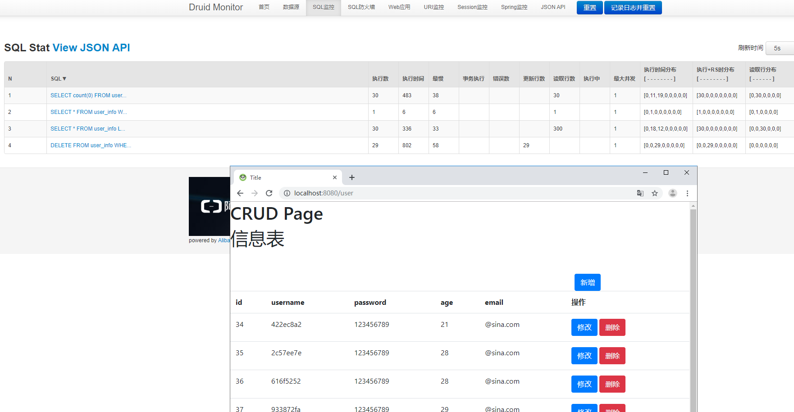
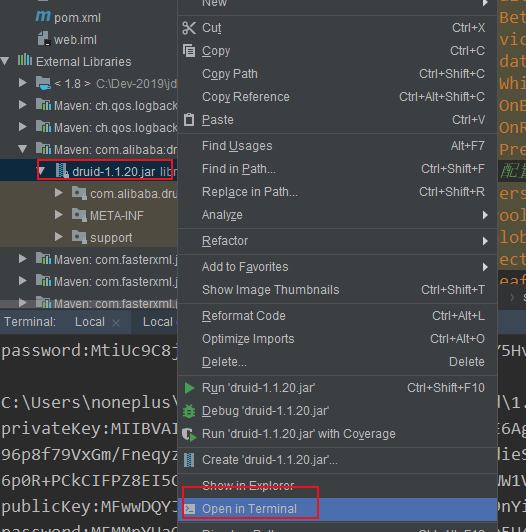

早期数据库访问（也没多少人上网）
①装载数据库驱动程序；
②通过jdbc建立数据库连接；
③访问数据库，执行sql语句；
④断开数据库连接。
对于并发量大的网站，会导致以下问题：
每一次web请求都要建立一次数据库连接，在同样的步骤下重复占用系统资源
不能控制被创建的连接对象数，系统资源会被毫无顾及的分配出去
如连接过多，也可能导致内存泄漏，服务器崩溃。
数据库连接池
连接池的作用是为了提高性能，将已经创建好的连接保存在池中，当有请求来时，直接使用已经创建好的连接对Server端进行访问。
这样省略（复用）了创建连接和销毁连接的过程（TCP连接建立时的三次握手和销毁时的四次握手），从而在性能上得到了提高。
嚣张的Druid（GitHub的Wiki上自称是Java语言最好的数据库连接池）

在上次Thymeleaf基础上进行集成
https://www.cnblogs.com/noneplus/p/11528129.html
<!-- https://mvnrepository.com/artifact/com.alibaba/druid -->
<dependency>
<groupId>com.alibaba</groupId>
<artifactId>druid</artifactId>
<version>1.1.20</version>
</dependency>
yaml
spring:
datasource:
# 数据源基本配置
username: noneplus
password: Noneplus564925080!
driver-class-name: com.mysql.cj.jdbc.Driver
url: jdbc:mysql://47.103.6.247:3306/user?serverTimezone=UTC
type: com.alibaba.druid.pool.DruidDataSource
# Druid数据源配置
initialSize: 5
minIdle: 5
maxActive: 20
maxWait: 60000
timeBetweenEvictionRunsMillis: 60000
minEvictableIdleTimeMillis: 300000
validationQuery: SELECT 1 FROM DUAL
testWhileIdle: true
testOnBorrow: false
testOnReturn: false
poolPreparedStatements: true
# 配置监控统计拦截的filters，去掉后监控界面sql无法统计，'wall'用于防火墙
filters: stat,wall,log4j
maxPoolPreparedStatementPerConnectionSize: 20
useGlobalDataSourceStat: true
connectionProperties: druid.stat.mergeSql=true;druid.stat.slowSqlMillis=500
thymeleaf:
cache: false
pagehelper:
helperDialect: mysql
reasonable: true
supportMethodsArguments: true
pageSizeZero: false #pageSize=0
DruidConfig
package zkrun.top.web.config;
import com.alibaba.druid.pool.DruidDataSource;
import com.alibaba.druid.support.http.StatViewServlet;
import com.alibaba.druid.support.http.WebStatFilter;
import org.springframework.boot.context.properties.ConfigurationProperties;
import org.springframework.boot.web.servlet.FilterRegistrationBean;
import org.springframework.boot.web.servlet.ServletRegistrationBean;
import org.springframework.context.annotation.Bean;
import org.springframework.context.annotation.Configuration;
import javax.sql.DataSource;
import java.util.Arrays;
import java.util.HashMap;
import java.util.Map;
@Configuration
public class DruidConfig {
//加载application.yaml中的Druid配置
@ConfigurationProperties(prefix = "spring.datasource")
@Bean
public DataSource druid(){
return new DruidDataSource();
}
//配置Druid的监控
//1、配置一个管理后台的Servlet
@Bean
public ServletRegistrationBean statViewServlet(){
ServletRegistrationBean bean = new ServletRegistrationBean(new StatViewServlet(), "/druid/*");
Map<String,String> initParams = new HashMap<>();
initParams.put("loginUsername","hq");
initParams.put("loginPassword","564925080");
initParams.put("allow","");//默认就是允许所有访问
initParams.put("deny","192.168.15.21");
bean.setInitParameters(initParams);
return bean;
}
//2、配置一个web监控的filter
@Bean
public FilterRegistrationBean webStatFilter(){
FilterRegistrationBean bean = new FilterRegistrationBean();
bean.setFilter(new WebStatFilter());
Map<String,String> initParams = new HashMap<>();
initParams.put("exclusions","*.js,*.css,/druid/*");
bean.setInitParameters(initParams);
bean.setUrlPatterns(Arrays.asList("/*"));
return bean;
}
}log4j
<dependency>
<groupId>log4j</groupId>
<artifactId>log4j</artifactId>
<version>1.2.17</version>
</dependency>访问：
http://localhost:8080/druid/

实时监控：



java -cp druid-1.0.16.jar com.alibaba.druid.filter.config.ConfigTools yourPassword其中druid-1.0.16.jar换成正在使用对应的版本，yourPassword改成数据库连接的密码。
生成privateKey和publicKey以及password
privateKey:MIIBVAIBADANBgkqhkiG9w0BAQEFAASCAT4wggE6AgEAAkEAgiX0+n2diIixWASA642qrI8hTo2xg1LItfeDFwGEg9G1wvlarF69gq+wDBpPhY63DDbry8d3I/vNZMaG0bGxwwIDAQABAkAQfiDiUWLSN4hJwCBaOVSkk2rEGp6hJq
96p8f79VxGm/FneqyzLgiIQvvIutsOWSSQses+C/cDoXYEgfddieSpAiEAuq1lcFuBPh7MWZwlbIi0GM4+/1tNQed+W9Lm3qGJYk0CIQCyepaXbrY8Vk8pUZMOKr74kFFBfG5WqbAJuNYym1PMTwIgZttPfx8METxLADzm6exQvzI0x+J4qQ1yNAn
6p0R+PCkCIFPZ8EI5C3kRe6OH5bT0NECHXQWNNjGVC1Wl90xTWW1VAiEAnKdXLI45e1e8jgpCQ4TG90PmDlKlrcxUnBiHUrOhyew=
publicKey:MFwwDQYJKoZIhvcNAQEBBQADSwAwSAJBAIIl9Pp9nYiIsVgEgOuNqqyPIU6NsYNSyLX3gxcBhIPRtcL5WqxevYKvsAwaT4WOtww268vHdyP7zWTGhtGxscMCAwEAAQ==
password:MEMMpYHaOUFVuaR37bMbUmGW76WVSLAD7pnFLrbup5H4Q6sZvWMDsYAcnZvAL2hY2Man1rc6SCJMYwrse1xPKw==
修改password，添加公钥。
spring:
datasource:
# 数据源基本配置
username: noneplus
password: MEMMpYHaOUFVuaR37bMbUmGW76WVSLAD7pnFLrbup5H4Q6sZvWMDsYAcnZvAL2hY2Man1rc6SCJMYwrse1xPKw== # 1.配置生成的password
driver-class-name: com.mysql.cj.jdbc.Driver
url: jdbc:mysql://47.103.6.247:3306/user?serverTimezone=UTC
type: com.alibaba.druid.pool.DruidDataSource
# Druid数据源配置
initialSize: 5
minIdle: 5
maxActive: 20
maxWait: 60000
timeBetweenEvictionRunsMillis: 60000
minEvictableIdleTimeMillis: 300000
validationQuery: SELECT 1 FROM DUAL
testWhileIdle: true
testOnBorrow: false
testOnReturn: false
poolPreparedStatements: true
# 配置监控统计拦截的filters，去掉后监控界面sql无法统计，'wall'用于防火墙
filters: stat,wall,log4j,config # 3.添加config
maxPoolPreparedStatementPerConnectionSize: 20
useGlobalDataSourceStat: true
# 2.开启加密，配置公钥
connectionProperties: druid.stat.mergeSql=true;druid.stat.slowSqlMillis=500;config.decrypt=true;config.decrypt.key=MFwwDQYJKoZIhvcNAQEBBQADSwAwSAJBAIIl9Pp9nYiIsVgEgOuNqqyPIU6NsYNSyLX3gxcBhIPRtcL5WqxevYKvsAwaT4WOtww268vHdyP7zWTGhtGxscMCAwEAAQ==
thymeleaf:
cache: false
pagehelper:
helperDialect: mysql
reasonable: true
supportMethodsArguments: true
pageSizeZero: false #pageSize=0